c语言结构体
ccc云志 2018-08-25 20:42:51
今天小编给大家带来c语言结构体的相关语法知识，温馨提示：亮点在最后！
1.关于c语言结构体的引入
在前面已经介绍了整形（int，long，….），浮点型（flaot，double），字符型（char），还介绍了数组（存储一组具有相同类型的数据），字符串。但是在实际问题中只有这些数据类型是不够的，有时候我们需要其中的几种一起来修饰某个变量，例如一个学生的信息就需要学号（字符串），姓名（字符串），年龄（整形）等等，这些数据类型都不同但是他们又是表示一个整体，要存在联系，那么我们就需要一个新的数据类型。
——结构体:就将不同类型的数据存放在一起，作为一个整体进行处理。
2.c语言使用结构体变量进一步加强了表示数据的能力。
2.1结构体声明
//申明一个结构体
struct book
{
char title[MAXTITL];//一个字符串表示的titile 题目 ；
char author[MAXAUTL];//一个字符串表示的author作者 ；
float value;//一个浮点型表示的value价格；
};//注意分号不能少，这也相当于一条语句；
这个声明描述了一个由两个字符数组和一个float变量组成的结构体，但是注意，他并没有创建一个实际的数据对象，而是描述了一个组成这类对象的元素，【因此，我们也有时候将结构体声明叫做模板，因为它勾勒出数据该如何存储，并没有实例化数据对象】。
下面介绍一下上面的结构体声明；
1.首先使用关键字struct，他表示接下来是一个结构体。
2.后面是一个可选的标志（book），它是用来引用该结构体的快速标记。因此我们以后就会可以这样创建数据对象
struct book library；//把library设为一个可以使用book结构体的结构体变量，则library这个变量就包含了其book结构体中的所有元素
3.接下来就是一个花括号，括起了结构体成员列表，及就是每个成员变量，使用的都是其自己的声明方式来描述，用分号来结束描述；
列如；char title[MAXTITL];字符数组就是这样声明的，用分号结束；
注意:其中每个成员可以使用任何一种c数据结构甚至是其他的结构体，也是可以的；
4.在结束花括号后的分号表示结构体设计定义 的结束。
2.2关于其struct声明的位置，也就是这段代码要放到哪里。同样这也是具有作用域的。
这种声明如果放在任何函数的外面，那么则可选标记可以在本文件中，该声明的后面的所有函数都可以使用。如果这种声明在某个函数的内部，则它的标记只能咋内部使用，并且在其声明之后；
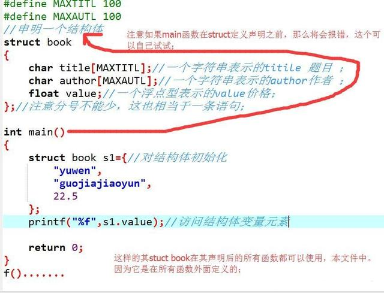
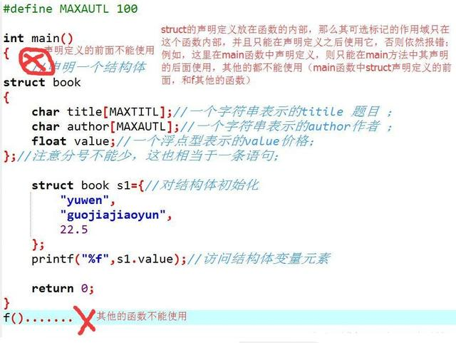
2.3关于我们不断说的，标记名是可选的，那么我们什么时候可以省略，什么时候一定不能省略呢？
如果是上面那种声明定义的方法，并且想在一个地方定义结构体设计，而在其他地方定义实际的结构体变量那么就必须使用标记；
可以省略，设计的同时就创建该结构体变量，但是这种设计是一次性的，
还有就是引入typedef。
这个到后面的定义结构体变量一起说吧
关于结构体类型的定义的总结,一般格式就是:
struct 结构体名(也就是可选标记名）
{
成员变量；
}；//使用分号表示定义结束；
3.定义结构体变量
3.1之前我们结构体类型的定义（结构体的声明）只是告诉编译器该如何表示数据，但是它没有让计算机为其分配空间。我们要使用结构体，那么就需要创建变量，也就是结构体变量；
创建一个结构体变量；struct book library；
看到这条指令，编译器才会创建一个结构体变量library，此时编译器才会按照book模板为该变量分配内存空间，并且这里存储空间都是以这个变量结合在一起的，这也是后面访问结构体变量成员的时候，我们就要用到结构体变量名来访问。
分析:
struct book的作用；在结构体声明中，struct book所起到的作用就像int，，，，等基础数据类型名作用一样。
struct book s1，s2，*ss；
定义两个struct book结构体类型的结构体变量，还定义了一个指向该结构体的指针，其ss指针可以指向s1，s2，或者任何其他的book结构体变量。
其实：
struct book library；
等效于：
struct book{
char …
….
…..
}library；
这两种是等效的，只是第一种可以减少代码的编写量；
3.2现在还是回到刚才提及的那个问题，可选标志符什么时候可以省略
其一：
struct
{
char title[MAXTITL];
char author[MAXAUTL];
float value；
}library;
//注意：这里不再是定义声明结构体类型，而是直接创建结构体变量了，这个编译器会分配内存的；
//这样的确可以省略标识符也就是结构体名，但是只能使用一次，因为这是声明结构体的过程和定义结构体变量的过程和在了一起，并且个成员变量没有初始化的；
//如果你想多次使用一个结构体模块，这样子是行不通的；
其二：
用typedef定义新类型名来代替已有类型名，即给已有类型重新命名；
一般格式为；typedef 已有类型 新类型名；
typedef int Elem;
typedef struct{
int date;
.....
.....
}STUDENT;
STUDENT stu1,stu2;
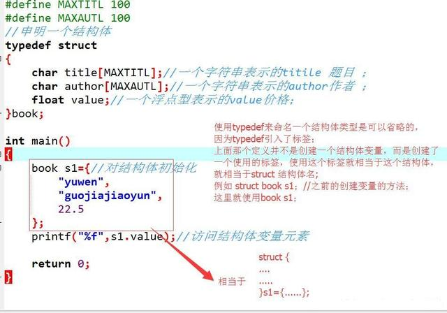
总结一下关于结构体变量的定义：
1.先定义结构体类型后再定义结构体变量；
格式为；struct 结构体名 变量名列表；
struct book s1，s2，*ss；//注意这种之前要先定义结构体类型后再定义变量；
2.在定义结构体类型的同时定义结构体变量；
格式为；
struct 结构体名
{
成员列表；
}变量名列表；//这里结构体名是可以省的，但尽量别省；
struct book
{
char title[MAXTITL];//一个字符串表示的titile 题目 ；
char author[MAXAUTL];//一个字符串表示的author作者 ；
float value;//一个浮点型表示的value价格；
}s1，s2;
3.直接定义结构体类型变量，就是第二种中省略结构体名的情况；
这种方式不能指明结构体类型名而是直接定义结构体变量，并且在值定义一次结构体变量时适用，无结构体名的结构体类型是无法重复使用的，也就是说，后面程序不能再定义此类型变量了，除非再写一次重复的struct
4.对于结构体变量的初始化
4.1先回忆一下关于基本数据类型和数组类型的初始化
int a = 0；
int array[4] = {1,2,3,4};//每个元素用逗号隔开
回忆一下数组初始化问题；
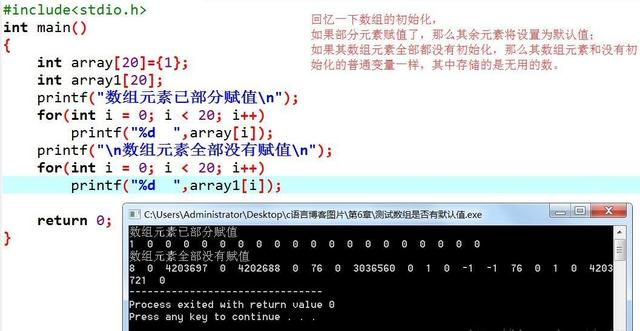
再回到结构体变量的初始化吧
关于结构体变量的初始化与初始化数组类似：也是使用花括号括起来，用逗号分隔的初始化好项目列表，注意每个初始化项目必须要和要初始化的结构体成员类型想匹配
struct book s1={//对结构体初始化
"yuwen",//title为字符串
"guojiajiaoyun",//author为字符数组
22.5 //value为flaot型
};
//要对应起来，用逗号分隔开来，与数组初始化一样；
4.2加入一点小知识，关于结构体初始化和存储类时期的问题
如果要初始化一个具有静态存储时期的结构体，初始化项目列表中的值必须是常量表达式，
如果存储时期是自动的，那么列表的值就不必是常量了；
关于这点在讲存储类时期的时候在分析；
4.3注意：
如果在定义结构体变量的时候没有初始化，那么后面就不能全部一起初始化了；
意思就是：
///////这样是可以的，在定义变量的时候就初始化了；
struct book s1 = { /* 对结构体初始化 */
" guojiajiaoyun " , /* author为字符数组 */
" yuwen " , /* title为字符串 */
22.5
};
///////这种就不行了，在定义变量之后，若再要对变量的成员赋值，那么只能单个赋值了；
struct book s1;
s1 = {
" guojiajiaoyun " , /* author为字符数组 */
" yuwen " , /* title为字符串 */
22.5
}; /* 这样就是不行的，只能在定义的时候初始化才能全部赋值，之后就不能再全体赋值了，只能单个赋值； */
只能；
s1.title = "yuwen";........//单个赋值；
4.4对于结构体的指定初始化
《这个只存在于c99，》
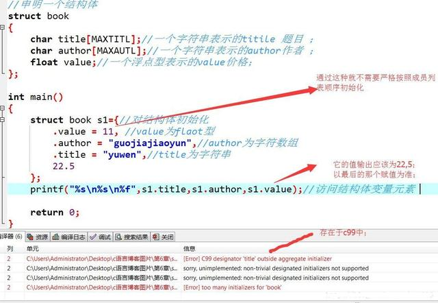
5.访问结构体成员
5.1结构体就像一个超级数组，在这个超级数组内，一个元素可以是char类型，下个元素就可以是flaot类型，再下个还可以是int数组型，这些都是存在的。在数组里面我们通过下标可以访问一个数组的各个元素，那么如何访问结构体中的各个成员呢？
用结构成员运算符点（.）就可以了；
结构体变量名.成员名;
注意:点其结合性是自左至右的，它在所有的运算符中优先级是最高的；
例如，s1.title指的就是s1的title部分，s1.author指的就是s1的author部分,s1.value指的就是s1的value部分。然后就可以像字符数组那样使用s1.title,象使用float数据类型一样使用s1.value；
注意:s1；虽然是个结构体，但是s1.value却是float型的，因此s1.value就相当于float类型的变量名一样，按照float类型来使用；
例如；printf(“%s %s %f”,s1.title,s1.author,s1.value);//访问结构体变量元素
注意:scanf(“%d”,&s1.value); 这语句存在两个运算符，&和结构成员运算符点，按照道理我们应该将（s1。value括起来，因为他们是整体，表示s1的value部分）但是我们不括起来也是一样的，因为点的优先级要高于&。
5.2如果其成员本身又是一种结构体类型，那么可以通过若干个成员运算符，一级一级的找到最低一级成员再对其进行操作；
结构体变量名.成员.子成员………最低一级子成员;
struct date
{
int year;
int month;
int day;
};
struct student
{
char name[10];
struct date birthday;
} student1;
//若想引用student的出生年月日，可表示为；student.brithday.year；
brithday是student的成员；year是brithday的成员；
5.3整体与分开
5.3.1可以将一个结构体变量作为一个整体赋值给另一相同类型的结构体变量，可以到达整体赋值的效果；这个成员变量的值都将全部整体赋值给另外一个变量；
5.3.2不能将一个结构体变量作为一个整体进行输入和输出；在输入输出结构体数据时，必须分别指明结构体变量的各成员；
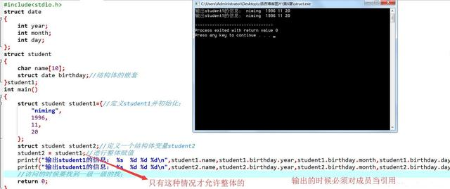
+
总结：除开“相同类型的结构体变量可以相互整体赋值”外，其他情况下，不能整体引用，只能对各个成员分别引用；
6.结构体数组（这个在国二里面常考的类型，只要考结构体就离不开结构体数组和成员的访问，当然也只是简单的操作）
6.1为什么要引用结构体数组?
显然，在上面的book类型的结构体 ，每本书就需要用一个book类型的结构体变量来描述，若是要描述两本书，需要使用两个这样的变量，依次类推；因此要使用一个该结构体的数组，来表示这些图书；并且数组就是存储一组具有相同类型的数据，因此就有了结构体数组的出现，注意本置，
6.2声明结构体数组
与普通的数组声明一样，int a[10];int为元素的数据类型，a为数组名 【10】表示申请了10的int单元的内存；
再看结构体声明；struct book library[10];是不是类似，struct book为数组元素的数据类型，library为数组名，[10]为申请了10个struct book单元的内存；
解释；声明library为一个具体10个元素的数组，并且每个元素都book类型的结构，因此可以得到library[0],library[1]…….都是单独独立的一个book结构；
注意library本身不是结构体名而是一个数组名；
6.3结构体数组的初始化
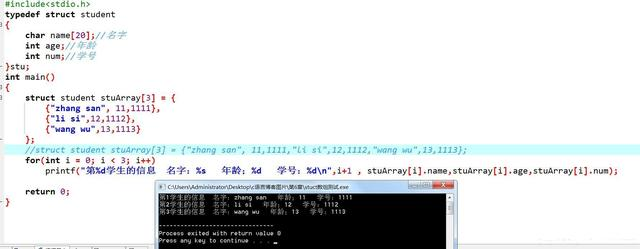
两种初始化:就是在定义的时候赋值的两种情况；
6.4访问结构体数组的成员
规则:在结构体名后加点运算符，然后再是成员名；
library[5].title;//表示第5个元素的title成员；library[5]是结构体变量名，title就是成员名；
library[5].titlt[4];//注意title是数组类型，第5个数组元素的title成员的第4个字符；
总结:
library //book结构体的数组
library[2]//数组的第二个元素，一个book结构体类型的变量名；
library[2].title；//char数组，结构体数组的第二个元素的title成员；
library[2].title[4]；//表示一个字符，结构体数组的第二个元素的title成员的第四个字符；
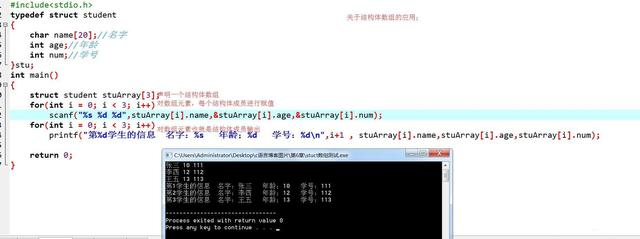
7.指向结构体的指针
7.1使用指向结构体的好处；就像指向数组的指针一样，它比数组本身更容易操作，指向结构体的指针通常也比结构体本身更容易操作；
声明和初始化结构体指针，
声明struct book * him；
规则就是，struct 结构体名+ * + 指针名；
这个声明不是建立一个新的结构体，而是创建了一个指针类型的him指针变量，他可以指向任何现有的book类型的结构体；
him = &library[0]；
指针him正指向结构体library[0]，如何使用him来取得library[0]的一个成员呢？
方法一:
引入一个运算符，->
后跟->运算符的结构体指针和后跟.点运算符的结构体名是一样操作的；
注意一点的是；不能使用him.成语；因为him不是结构体名；
总结:
->只用于结构体指针访问成员；
.点只用于结构体名访问成员；
方法二:
如果him=&library[0]，那么him=library[0]；因为&和是一个互逆的运算符；
&取地址，*取值；
=》library[0].value 等价于 （*him）.value；注意必须使用圆括号，优先级问题；
然后都与him.value是一个作用；
对于考国二懂得上面的也就差不多了,足够了；
8.向函数传递结构体信息
8.1传递结构体成员
只要结构体成员是具有单值的数据类型，（及int等基础数据类型）就可以把它作为参数传递给一个接受这个特定参数类型的函数；
注意:这个只能实现访问，不能修改；
8.2使用结构体地址
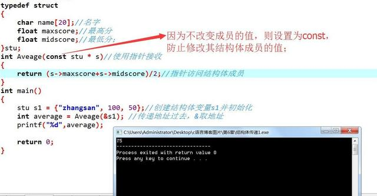
注意:如果不修改值，则设置为const
8.3使用结构体作为参数传递
其中s也是结构体变量，并且为s1结构体变量的副本。
总结:
结构体指针，使用->运算符访问成员；
结构体名；使用.点运算符访问成员；
要想通过调用函数修改实参结构体变量的值，只能传递地址，通过指针来修改；直在地址上修改；
8.4结构体之间的双向通信
先注意这个:c语言中对于结构体变量是可以整体赋值的，无论其成员是怎样的
传递地址，使用结构体指针接收，用于访问不做修改；const限制修改，
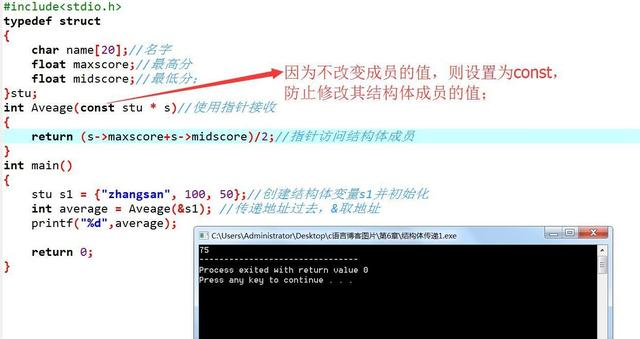
结构体作为参数传递,不能成功修改实参，只能访问；
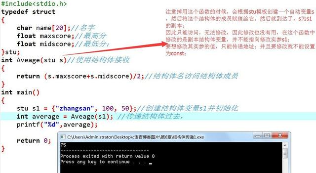
结构体作为参数，修改结构体并且返回类型也为结构体达到修改的目的；
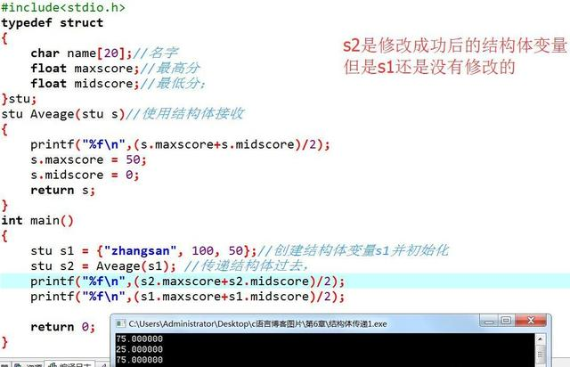
传递地址，使用结构体指针接收，用于修改，不使用const限制修改
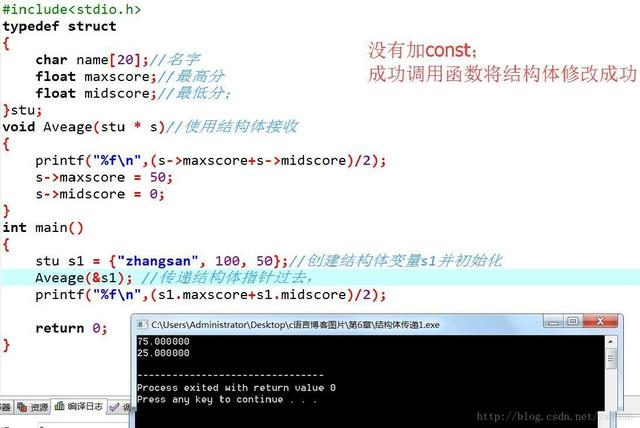
通常我们是使用结构体指针的，如果不修改那么我们会使用const修改；
9.在结构体中使用字符数组还是字符指针来存储字符串
答案先给出:尽量使用字符数组；
9.1使用字符数组
#define MAXTITL 100
#define MAXAUTL 100
struct book
{
char title[MAXTITL];//一个字符串表示的titile 题目 ；
char author[MAXAUTL];//一个字符串表示的author作者 ；
float value;//一个浮点型表示的value价格；
};
字符串的存储在结构体内部的；
结构体总分配200个字节的内存给这两个字符串
9.2使用字符指针
struct book
{
char *title；
char * author；
};
这里的字符串是存储在编译器认为存储字符串常量的任何地方，这个结构体中存放的只有两个地址而已，值分配8分字节；结构体不为字符串分配任何内存存储空间，因此这时候在输入的时候存在了一个潜在的危险；
scanf("%s",s.last);//把字符串放到由s.last指向的内存中因为这是一个未初始化的变量，因此该地址是可以指向任意大小的，因此此时就是一个潜在的危险；
总结:因我们最好是使用字符数组来存储字符串；
结构体最有用的在于自引用结构，基于这个特性可以实现链表等较为复杂的数据结构，在操作系统内核中链表的应用很广泛。此外，基于自引用结构还能用C语言实现基本的C++对象概念。
结构体变量.结构体成员
你可以把结构体变量看成是一个定语，对结构体成员的修饰。
你也可以变结构体变量看成是主体，.看成是引用，结构体成员看成是结构体变量的下标，只是这个下标不是数字的偏移量，而相当于是一个key。也就是整体用特殊的数组去看待。